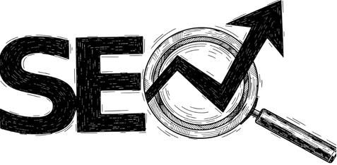

Ottimizzazione SEO
Il traffico organico non è gratis, costa tempo e metodo: a differenza degli annunci, però, continua a portare richieste anche nei mesi in cui non spendi niente.
Farsi trovare da chi sta già cercando. Senza pagare il clic, mese dopo mese.
Contenuti, struttura tecnica e presenza locale costruiti nel tempo: lenta a partire, e proprio per questo difficile da toglierti.

Il sito esiste. Su Google, per le ricerche che portano clienti, spesso no.
Cerca il nome della tua azienda e la prima posizione è tua, ci mancherebbe. Il punto è che nessuno cerca il nome di un'impresa che ancora non conosce: digita "idraulico urgente Torino" oppure "commercialista per forfettari", e lì la prima pagina è occupata da qualcun altro.
Senza una struttura tecnica pulita e senza pagine costruite sulle domande che i clienti fanno davvero, il sito finisce per competere solo con se stesso: continua a esistere e continua a non portare nessuno di nuovo.
Come si guadagna una posizione
Audit tecnico e ricerca delle query
Controlliamo velocità, indicizzazione e link interni, poi mettiamo in fila le ricerche che i tuoi clienti digitano davvero, non quelle che suonano bene in riunione.
Lavoro sulle pagine
Sistemiamo titoli, descrizioni, gerarchia dei contenuti e markup schema su ogni pagina che ha un potenziale concreto.
Presenza locale e autorevolezza
Curiamo la scheda Google Business Profile, recensioni comprese, e costruiamo link coerenti con il tuo settore invece che presi dove capita.
Contenuti e misura mensile
Guardiamo posizioni e traffico mese per mese e pubblichiamo nuove pagine sulle ricerche che possono davvero trasformarsi in una richiesta.
Le domande che arrivano quasi sempre
In genere da tre a sei mesi per posizioni stabili, di più nei settori affollati. Chi ti promette la prima pagina in una settimana ti sta vendendo qualcos'altro.
Se hai una sede o servi un'area precisa, la parte locale è quella che pesa di più. Se invece il mercato è nazionale il baricentro si sposta sui contenuti e sull'autorevolezza del dominio.
Possiamo scriverli noi partendo dalla tua competenza tecnica, oppure rivedere quelli che scrivi tu: dipende da quanto tempo riesci davvero a dedicarci ogni mese.
Contenuti e ottimizzazioni restano tuoi e continuano a lavorare. Senza manutenzione, però, chi nel frattempo pubblica ti supera nel giro di qualche mese.
Guardiamo dove sei su Google
Un audit di mezz'ora, senza impegno. Usciamo con una priorità chiara per la SEO, non con un elenco di consigli generici.